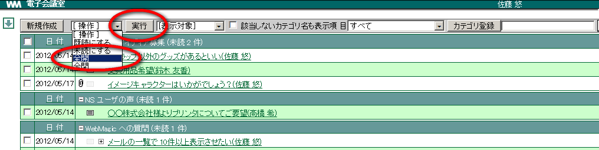
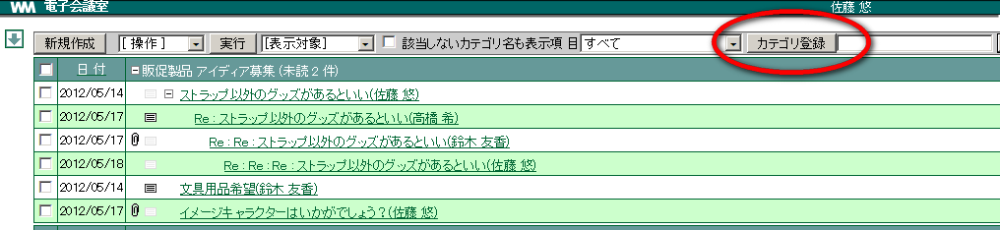
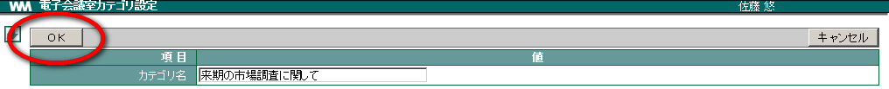

8. 電子会議室¶
8.1. 新規に情報を登録する¶
新しく情報を書き込みます。返答の場合は元の情報の下位に位置しますが、新しく書き込んだ場合、その意見が階層の先頭に表示されます。
メニューの
 をクリックします。
をクリックします。新規作成 をクリックします。

書き込みたい「カテゴリ」を選択し、各項目を入力して OK をクリックします。

階層の先頭に書き込んだ情報が表示されます。


 ・・・既に読んだ情報
・・・既に読んだ情報 ・・・未だ読んでいない情報
・・・未だ読んでいない情報8.3. 登録されている情報を確認する¶
登録されている情報を確認しましょう。意見のやりとりは階層構造で表示されます。
Note
＋ － のマークの意味
メニューの
をクリックします。確認したい情報の「タイトル」をクリックします。

内容が表示されます。この情報に対して下位の書込がある場合、画面下の階層から同様に確認することが出来ます。 [1]

8.3.1. 一覧の「全開」表示と「全閉」表示¶
▼ をクリックし「全開」を選択します。 実行 をクリックします。
下位の書込がある場合、それらが全て表示されます。

▼ をクリックし「全閉」を選択します。 実行 をクリックします。
下位の書込が非表示になります。

8.3.2. 一覧の「未読のみ」表示と「未読を含む階層」表示¶
▼ をクリックし「未読のみ」を選択します。未読の書き込み一覧が表示されます（情報の階層は保持せず表示される）。

▼ をクリックし「未読を含む階層」を選択します。未読の書き込みが含まれる情報を階層も含めて一覧表示されます。

8.3.3. 「親記事の表示」を表示させたい¶
内容確認画面で 親記事の表示 をクリックします。画面下には階層の情報が表示されます。

参照していた記事の親記事が表示されます。

8.4. 情報に返答する¶
登録されている情報に対して、返答を書き込みましょう。元の文章とタイトルは、自動的に引用されます。
メニューの
をクリックします。確認したい情報の「タイトル」をクリックします。
返答 をクリックします。

文章を入力し、 OK をクリックします。 [2]

Note
添付ファイルを付けたい場合、 参照 をクリックしファイルを指定して 追加 をクリックします。
8.5. 新規にカテゴリを登録する¶
カテゴリは、あらかじめ管理者が登録できます。
メニューの
をクリックします。カテゴリ登録 をクリックします。

カテゴリ登録 をクリックします。

カテゴリ名を入力し OK をクリックします。

新しいカテゴリ名が登録されます。